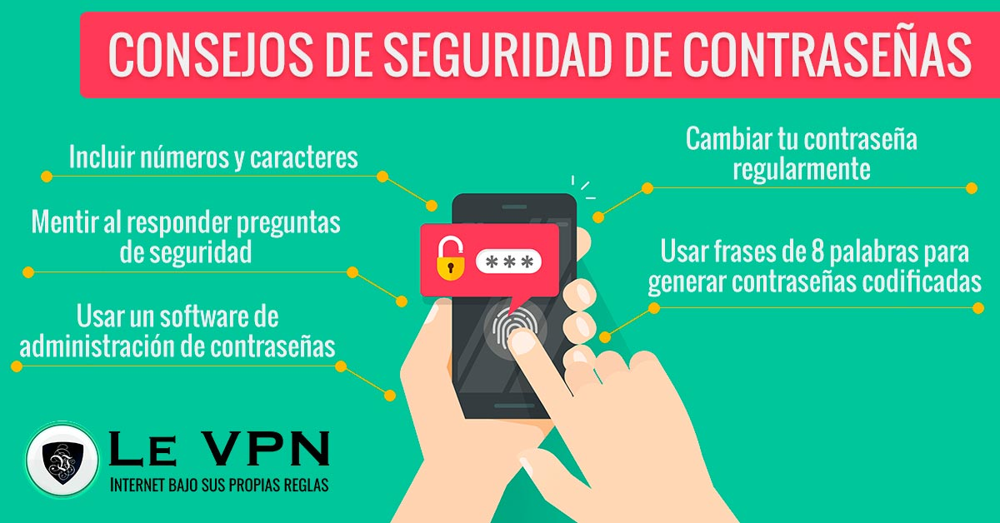

Protección de Contraseñas
Una contraseña segura es la principal barrera que impide que te hackeen la mayoría de tus cuentas en línea. Sin prácticas actualizadas, es probable que estés utilizando contraseñas que los estafadores cibernéticos pueden adivinar fácilmente en cuestión de horas. Exponerte al robo de identidad y a la extorsión es un riesgo que nunca debes correr. Tendrás que crear contraseñas que puedan combatir los métodos modernos de robo de contraseñas. Estos son algunos de los métodos que los hackers usan para entrar en tus cuentas:
- Hackeo basado en diccionario: Usa un programa automatizado para combinar las palabras del diccionario en formas comunes. Los usuarios hacen que las contraseñas sean fáciles de recordar, así que estos hackers intentan imitar los patrones obvios.
- Redes sociales: La información personal compartida públicamente se usa para atacarte personalmente a ti. Los usuarios suelen incluir en sus contraseñas nombres, cumpleaños e incluso nombres de equipos deportivos favoritos. Mucha de esta información se puede revelar con solo pasar un poco de tiempo navegando en tus redes sociales.
- Ataques de fuerza bruta: Usan un programa automatizado para recrear todas las combinaciones posibles de caracteres hasta encontrar tu contraseña. A diferencia del hackeo con diccionario, el ataque de fuerza bruta no maneja bien las contraseñas largas. Sin embargo, las contraseñas cortas se pueden descubrir fácilmente en horas en algunos casos.
- Suplantación de identidad: Un estafador te presiona para que le des al hacker tu dinero o información valiosa. Fingen ser creíbles, por lo general, se hacen pasar por una organización de confianza o alguien que conoces. Los estafadores de suplantación de identidad pueden llamarte, enviarte un mensaje de texto, un correo electrónico o dejarte un mensaje en las redes sociales. También pueden usar aplicaciones, sitios web y perfiles de redes sociales fraudulentos. Si crees que necesitas protección contra los ataques de suplantación de identidad, te recomendamos que uses Kaspersky Internet Security.
- Filtraciones de datos: Las empresas son hackeadas con mayor frecuencia, y los hackers toman todos los datos para exponerlos en línea con fines de lucro. Esto puede ser especialmente amenazador si has reusado contraseñas viejas, ya que es muy probable que las cuentas desactualizadas se hayan visto comprometidas.
Cómo crear una contraseña segura
Para protegerte de los últimos métodos de hackeo, necesitarás contraseñas potentes. Así que, si te estás preguntando: “¿Qué tan segura es mi contraseña?”, estos son algunos consejos para ayudarte a crear una contraseña segura:
- ¿Es larga? Intenta que tenga un mínimo de 10-12 caracteres, pero trata de hacerla más larga, si es posible.
- ¿Es difícil de adivinar? Deberías evitar las secuencias (“12345“ “qwerty”) porque las pueden hackear con fuerza bruta en segundos. También evita las palabras comunes (“contraseña1”) por la misma razón.
- ¿Usa tipos de caracteres variados? Las minúsculas, las mayúsculas, los símbolos y los números pueden formar parte de tu contraseña. La variedad puede aumentar lo impredecible que es tu contraseña.
- ¿Evita los sustitutos obvios de los caracteres? Por ejemplo, puedes estar usando el número cero “0” en lugar de la letra “O”. Los hackers codifican esto en su software hoy en día, así que evita esto.
- ¿Usa alguna combinación de palabras poco común? Las frases de contraseña pueden ser más seguras cuando se usan palabras inesperadas. Incluso si estás usando palabras comunes, puedes ordenarlas en un orden extraño y asegurarte de que no estén relacionadas. Ambos métodos pueden evitar el hackeo con diccionario.
- ¿La recordarás? Usa algo que tenga sentido para ti, pero que sea difícil de adivinar para las computadoras. Incluso las contraseñas aleatorias pueden recordarse mediante la memoria muscular y ser semileíbles. Pero las contraseñas que te impiden acceder a tu propia cuenta no ayudarán mucho.
- ¿La has usado antes? Reutilizar las contraseñas compromete varias cuentas. Haz que siempre sea original.
- ¿Usa una regla difícil de adivinar para las computadoras? Un ejemplo podría ser una frase de contraseña de tres palabras de cuatro letras, en la que se sustituyen las dos primeras letras de cada palabra por números y símbolos. Esto podría ser: “?4ee#2ge?6ng” en lugar de “treecagesing” (árboljaulacantar).
